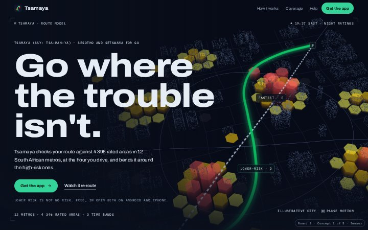
Redesign proposals for tsamayaapp.co.za
Two rounds of three working prototypes, each with a home page and a Johannesburg page, built on the live figures, the real app screenshots and the real coverage outlines. Round 2, at the top, is the modern and animated set. Open them on your phone as well as a laptop: most of your visitors will arrive on an Android phone.
Round 2 · modern, animated, tech-forward
Round 1 was too editorial and too retro. Round 2 started with two new research passes: award-winning sites from 2025 and 2026, and how serious navigation and self-driving brands show sensing, routes and risk. Three new prototypes came out of it. Each one is built around one hero idea, runs on live South African time, and uses the real figures and the real route card.
- Sensor. A live 3D city, the way Waymo shows what its car sees. Risk columns rise and fall with the clock, and the emerald route draws itself and bends around them as you scroll.
- Flow. Bright and typographic. Thousands of fine particles stream like traffic, bend around risk and turn emerald once they have gone around. Further down, the page itself goes from day to night.
- Cockpit. A premium product film in the Apple and Linear tradition. A phone rises and flattens as you scroll, its screen changes through the app, then the app moves to the car and six live tiles show everything else.
Recommendation
Use Sensor for the home page and Cockpit's phone film and live tiles for "How it works". Sensor is the one that makes people stop and look, and it tells the time-of-day story better than anything else here. Cockpit sells the app itself. Both are dark, so they sit together as one site on one type family. Test Sensor on a real budget Android phone first; if it cannot hold a smooth frame rate in its light mode, lead with Cockpit and keep the 3D for laptops.
Open the round 2 prototypes
Scroll slowly: most of the motion is tied to scrolling. Each footer and metro list links to the Johannesburg page in the same design. On a laptop, try the Daytime, Evening and Night buttons, and move the pointer over the Flow hero.
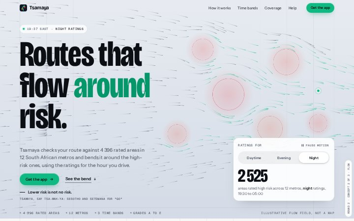
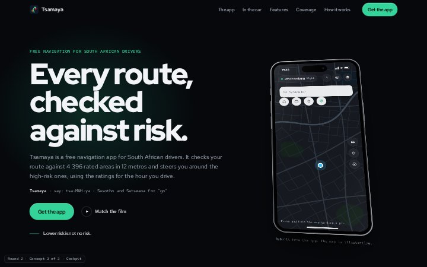
What the round 2 research found
Award winners do one idea perfectly
Lusion's Oryzo is one object rendered live with real weight. Igloo Inc, Awwwards Site of the Year 2024, draws everything in WebGL, including its text. The Lando Norris site, Site of the Year 2025, has a WebGL hero that reacts to the cursor and shrinks into the page on scroll.
So: each concept has one hero idea (a 3D city, a flow field, a phone) and everything else supports it.
Real product and real data beat decoration
Linear leads with its real product. Shopify's live globe draws each real order as an arc. Jurors mark down made-up numbers and stock 3D shapes.
So: the real route card (grade D against E, 25 minutes each, 68% less risk), the real counts (1 372, 1 524, 2 525) and the live time in South Africa.
Serious navigation tech keeps the world dim
Waymo shows its sensing as monochrome points and colours only what the car is reasoning about. Tesla changed road edges on its driving display from red to grey to calm it down. Uber's deck.gl turns counts into hexagon columns, and earth.nullschool makes invisible forces visible as slow particles.
So: grey worlds, emerald only for your route and the main button, risk colours only on the cells.
Motion has numbers
Headlines rise line by line from behind a mask over about one second, 0.1 s apart, on an expo-out curve. Interface feedback stays under 300 ms. Pinned chapters last 1.5 to 3 screens. Smooth scrolling applies to mouse wheels only; phones keep native scrolling.
So: all three use GSAP (fully free since version 3.13 in April 2025), Lenis and those timings.
Risk without stigma
Google and Waze stopped routing through Nyanga in 2023 after attacks on motorists, and residents objected to the stigma. SketchFactor was accused of racism in 2014. Citizen's radar ring around the user made people more anxious, not less.
So: every city is procedural and labelled "Illustrative city", risk is shown as grouped cells that change with the time of day, and there are no alarm rings, sirens or crime imagery.
Judged on mid-range Android
Awwwards jurors test on real mid-range phones, and a hero running at 18 frames a second does not win. The good sites cap pixel density, pause scenes that are off screen and lower quality when frames run slow.
So: each concept has a light mode for weak phones or data saver, pauses when off screen, offers a "Pause motion" button, and falls back to a still picture.
The round 2 proposals in detail
4. Sensor
Open the prototypeHow Tsamaya sees a city: a dim 3D model of an illustrative city where colour is reserved for intent, and the whole page is one continuous camera move.
- Hero
- A live Three.js scene: about 70 000 points of city, about 700 hexagonal risk columns and two routes. The city sweeps into view, the grey fastest line draws, then the emerald route bends away.
- Chapters
- The bend: a re-routing pulse, the real route card numbers and "4 to 2 high-risk areas". Three clocks: a clock runs from 05:00 to 23:00, the light turns to night and the columns rise (1 372, 1 524, 2 525). Twelve metros: the city dissolves into a point map of South Africa with 12 coverage pillars.
- Type
- Archivo at its widest setting for headlines, Martian Mono for the readouts.
- Colour
- Navy-black, cool grey points, emerald for the route. Amber and red only on the columns.
- On weak phones
- About 20 000 points and 300 columns, lower resolution, halves again if frames run slow, stops when off screen. Reduced motion gets a still picture.
- Watch out for
- The heaviest page, at about 1.1 MB before compression, 670 KB of it the 3D library. Test it on a real budget Android phone.
- Effort to build
- Largest of the three.
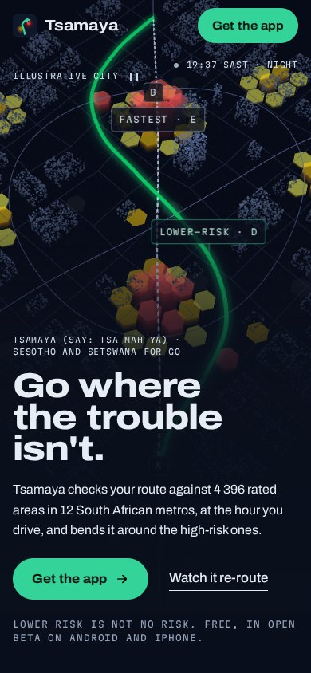
5. Flow
Open the prototypeTraffic is a flow, and Tsamaya bends it around risk. Bright, precise and fast, with huge type and a page that goes from daylight to night.
- Hero
- A canvas flow field of up to 2 400 fine particles. The ones that pass a risk area peel around it and turn emerald. The Daytime, Evening and Night buttons change the field and the count; on a laptop the pointer pushes the flow too.
- Moments
- A pinned bend where the fastest line draws and then reshapes into the lower-risk route, ending on 68%. A statement that lights up word by word. A day-to-night sequence where the page turns peach, violet, then navy. A metro marquee and a map that draws itself.
- Type
- Bricolage Grotesque, condensed and very large, with Instrument Sans and Geist Mono.
- Colour
- Off-white paper, ink and emerald, with the sunset colours only in the time sequence.
- On weak phones
- 900 particles, halves again if frames run slow, pauses off screen. Reduced motion draws one still frame of streamlines.
- Watch out for
- The flow field is abstract, so the product has to do more of the talking lower down. About 600 KB before compression.
- Effort to build
- Medium.
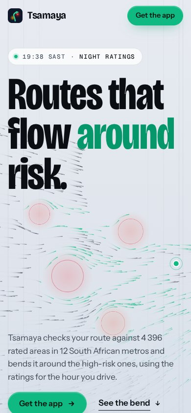
6. Cockpit
Open the prototypeA product film for the app itself: black glass, precise light and every tile alive.
- Hero
- A phone built in code (not an image) that rises, flattens and moves to the centre as you scroll.
- Moments
- A pinned film: the screen changes from "Where to?" to the route options (real numbers), the real turn-by-turn screenshot, then a police notice. A CarPlay dashboard. Six live tiles: grade ladder, 24-hour ring on South African time, police notice, speed limit, live trip, report a corner. A Fastest, Balanced, Lower-risk selector that reshapes the route.
- Type
- Red Hat Display, Text and Mono.
- Colour
- Near-black glass with soft emerald glows behind the headlines. Risk colours only on data.
- On weak phones
- No 3D at all. Weak devices lose the star fields and blur, and loops only run while visible.
- Watch out for
- The most familiar style of the three. The rebuilt app screens have to be updated when the app changes. About 470 KB before compression.
- Effort to build
- Medium.
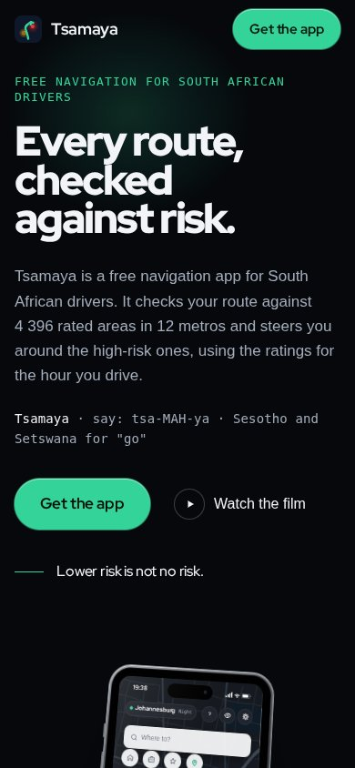
Round 2 side by side
| Criterion | 4. Sensor | 5. Flow | 6. Cockpit |
|---|---|---|---|
| Stops you on first load | A live 3D city on the first screen. | Huge type over moving streams. | A precise phone that rises as you scroll. |
| Shows the actual app | One real screenshot, lower down. | The real route card and one screenshot. | The app is the hero: four screens, the car and six live tiles. |
| Tells the time-of-day story | The columns rise as the clock runs to night. | The page itself goes from day to night. | A live 24-hour ring and band strip. |
| Unlike other app sites | Closer to Waymo than to an app landing page. | A light, typographic take on tech. | The Apple and Linear school, done well. |
| Runs well on a budget Android phone | Needs WebGL; a lighter tier and a still fallback are built in. | Canvas only, 900 particles on weak phones. | No 3D at all. |
| Ease of building into the real site | Three.js scene and camera chapters to maintain. | Canvas and scroll work, no 3D. | Rebuilt app screens must track the real app. |
| Measured first load, before compression | about 1.1 MB, 670 KB of it Three.js | about 600 KB | about 470 KB |
Scores are a judgement out of five; five dots is best on every row. Page sizes were measured locally before compression, which jsDelivr and the host apply, so real downloads are smaller.
Round 1 · the first three proposals, kept for reference
Summary
The current site is honest and well built, but it looks like a template: gradient headline text, pill buttons with glowing shadows, a frosted-glass header, a stat row, three numbered step cards and six identical icon cards. Research on what makes sites look machine-made lists almost every one of those.
The three proposals keep the familiar page structure (research says visitors trust a layout that looks like a normal site) and put all the character into type, colour, one graphic device and one moment of motion:
- Street guide. The spiral-bound street guide from the cubbyhole, redrawn: grid references, an index of metros, a key to map symbols and a highlighter line around a hatched risk area. Calm and precise.
- City clock. The site runs on South African time. It opens by telling you the time in Johannesburg and which ratings apply right now, and the page moves from morning light to night as you scroll. The most product-specific of the three.
- Road manual. Built from the South African road-sign system: sign green, DIN-style lettering, route markers, time plates, a message-sign strip, and the A to E route grade as a plate. The boldest and most local.
Recommendation
Build the Street guide, and borrow two pieces from the others: the live line from City clock ("It is 10:48 in Johannesburg. Daytime ratings apply.") and the A to E grade plate from Road manual. That gives the calmest, most trustworthy base, keeps the brand, and still tells the one story no other navigation app can tell: the ratings follow the clock.
Open the round 1 prototypes
Each link opens a full page. Use the Johannesburg link in each footer or coverage list to see the metro page in the same design.
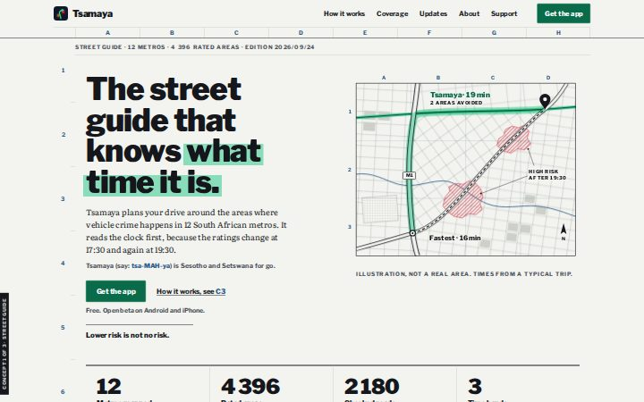
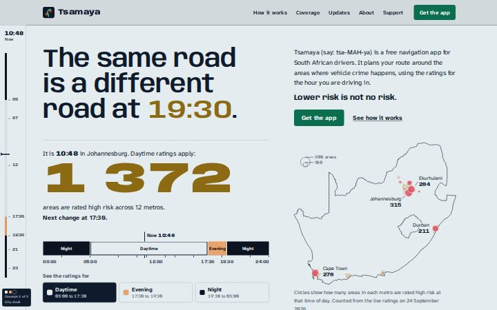
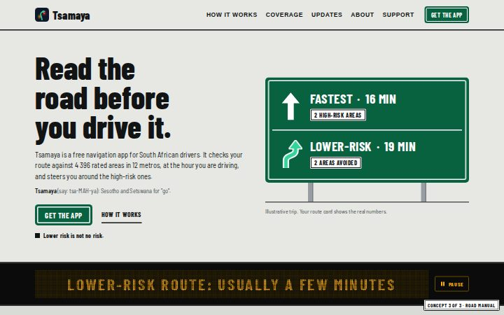
What the current site gets right, and where it reads as a template
Template tells on the current home page
- The headline's second line is gradient text ("trouble isn't" in an emerald fade).
- Pill-shaped buttons with coloured glow shadows.
- A frosted-glass sticky header (backdrop blur).
- A four-number stat row directly under the hero.
- "Three quick steps" as three numbered cards with line icons.
- Six identical feature cards, each with an icon in a tinted square.
- A small uppercase label over every heading (eight on the home page).
- Inter for body text, the face most often left at its default on machine-made sites, with Sora for headings.
- The same rhythm all the way down: white band, pale grey band, repeat.
What every proposal keeps
- The honest copy: "Lower risk is not no risk", no fake detours, no guarantees.
- Figures read from the live database, never typed by hand.
- Real app screenshots and the real coverage outlines.
- The rule that no suburb is ever named as risky.
- The zero-dependency static build, self-hosted fonts and cookieless analytics.
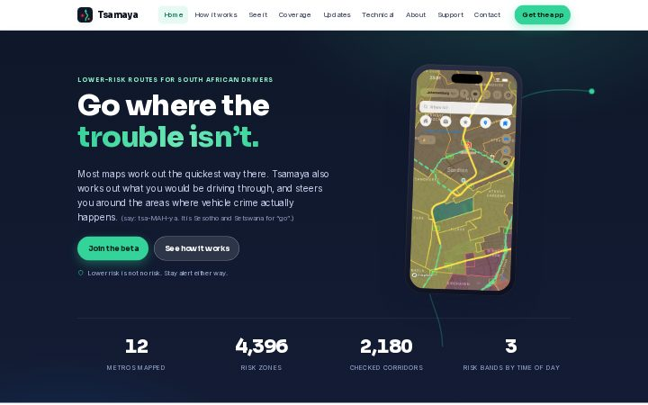
What the round 1 research found
Two research passes ran in parallel: one on what makes a website appealing and effective, one on what makes a site look machine-made and how distinctive sites avoid it. The findings that shaped the designs:
First impressions are fast
People rate how appealing a page looks within 50 ms, and those ratings hold up at 500 ms (Lindgaard et al., 2006). Two things win that moment: low to medium visual complexity, and a page that looks like a typical site of its kind. Complexity matters more (Tuch et al., 2012).
So: all three proposals keep the normal skeleton (logo top left, menu top right, hero, proof, how it works, action, footer). The character comes from type, colour, one graphic device and one motion moment, never from a strange layout.
The first screen does most of the work
57% of viewing time is spent above the fold and 74% in the first two screens (Nielsen Norman Group, 2018). Visitors read about 20 to 28% of the words on a page.
So: each first screen says what Tsamaya does, gives one main action and one quiet link, and lets the next section peek in. Headings are written to make sense on their own.
The machine-made look is measurable
An automated check of 1 590 launch pages found about 67% carried AI-design fingerprints: permanent dark themes, gradient backgrounds and grids of icon cards were the most common (Krebs). The purple comes from one Tailwind default whose creator apologised for it in 2025. The newer "anti-slop" look (an italic serif word in a sans headline, a small monospace label, amber on dark) has already become a cliché of its own.
So: no gradients as decoration, no icon-card grids, no monospace labels, no italic accent words, no Inter, and every structural device has to mean something.
Distinctive sites own one device
Sites that feel authored take a single system from the real world and commit to it. Waze's 2020 identity came from city blocks and road layouts (Pentagram). Stamen's map styles are the brand. Transit made the arrival time enormous. GOV.UK sets its type in a face descended from British road signs.
So: each proposal borrows one real South African system: the street guide, the clock and Highveld light, and the SADC road-sign manual.
Safety products earn trust by being calm
Fear messages only change behaviour when paired with a clear "you can do something" message (Tannenbaum et al., 2015 meta-analysis). SketchFactor was accused of racism in 2014 for rating neighbourhoods. Trust comes from showing your method, naming sources and stating limits (Nielsen Norman Group).
So: one calm sentence on the problem, then the answer. No crime imagery, no red heat blobs, no named suburbs, and the method and the limits stay visible.
Motion needs a job
About 100 ms for feedback, 200 to 300 ms for larger changes, and past 500 ms it feels slow (Nielsen Norman Group). Text that animates in on scroll makes people wait and makes the site feel slow. Anything that moves on its own for more than 5 s needs a pause control (WCAG 2.2.2).
So: one signature moment per concept, nothing hidden until you scroll, and everything turns off for visitors who ask their phone for reduced motion.
Your visitor has an Android phone and pays for data
About 4 in 5 South African mobile visits are Android. Vodacom's best-selling phone in 2025 was the Samsung Galaxy A06 at R 1 899. A prepaid 1 GB bundle cost about R 79 in 2025 (ICASA). The typical mobile home page weighs 2.56 MB (Web Almanac 2025).
So: Google Play is listed before TestFlight, the privacy line sits next to the download buttons, there are no libraries, video or WebGL, and each prototype stays around 1 MB or less.
South African visual language, used with care
SA road signs use DIN lettering: blue for freeways, green for other direction signs, route markers with yellow lettering (Road Traffic Signs Manual). The street guide with its grid references sat in almost every car. Some local sources are off limits for a car-owner app: minibus-taxi hand signs belong to commuters, "hijacking hotspot" signs slide into fear marketing, and Ponte-style skyline shots are the stock "dangerous Joburg" picture.
So: the concepts borrow public infrastructure (signs, atlases, light), not other people's culture.
Research caveat: the network policy in this session blocked opening source pages directly, so figures come from search summaries of the named sources. They are fine for design decisions. Check a number at the source before it goes on a slide.
The round 1 proposals in detail
1. Street guide
Open the prototypeEvery South African car used to carry a spiral-bound street guide. Tsamaya is that guide redrawn for how people drive now, with one difference: it knows what time it is.
- Signature device
- Atlas grid references in the margins, a key to map symbols, an index of metros with dotted leaders, and screenshots shown as numbered plates.
- Hero
- A line-drawn street map. The fastest route cuts through a hatched high-risk area; the Tsamaya route is a highlighter stroke that bends around it. Labelled as an illustration.
- Motion
- The highlighter draws itself once on load, in about 1.4 s. Index rows get a highlighter sweep on hover.
- Type
- Libre Franklin for headlines and map labels, Literata for reading text.
- Colour
- Cool map paper, printing ink, atlas blue, emerald highlighter. Risk colours only as labelled hatching. A night edition follows the phone's dark mode.
- Research it draws on
- Stamen's black and white map style, the street guide's grid references, "show your method" for trust.
- Watch out for
- It is the quietest of the three, so it depends on precise execution. Evoke the street guide, never copy MapStudio's cartography or covers.
- Effort to build
- Medium. CSS and inline SVG only, and the site already draws its coverage map as SVG at build time.
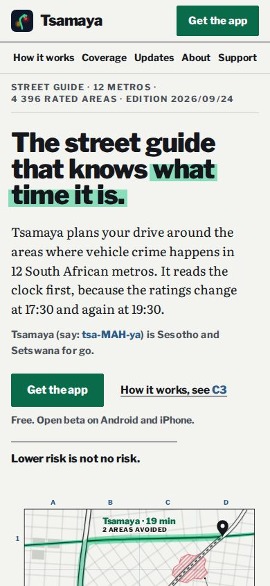
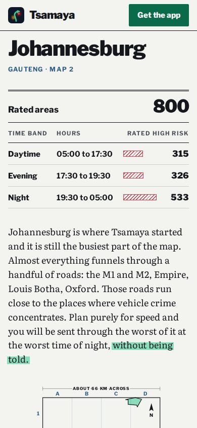
2. City clock
Open the prototypeTsamaya's ratings follow the clock: 1 372 areas are rated high risk in daytime and 2 525 at night. This design makes time the whole system. The page runs on South African time and moves through one day as you scroll.
- Signature device
- A live statement ("It is 14:12 in Johannesburg. Daytime ratings apply."), a 24-hour band strip, and a clock rail that tracks the hour of each section.
- Hero
- Daytime, Evening and Night buttons change the light, the national count and the metro circles on a map of South Africa.
- Motion
- The count runs between bands, the circles resize, and the background crossfades. Native scrolling is untouched.
- Type
- Anybody, a variable face whose weight gets heavier as the page gets darker, and Atkinson Hyperlegible Next for reading text.
- Colour
- Three real lights: pale Highveld winter sky, amber dusk, navy night with sodium-streetlight orange. The clock decides, not the phone's theme.
- Research it draws on
- Transit's enormous numbers, scroll-driven storytelling from data journalism, real data as the hero.
- Watch out for
- Three palettes mean three times the contrast checking. The night look sits close to the "amber on dark" cliché, so it has to stay disciplined. More JavaScript than the other two.
- Effort to build
- Larger. Time logic runs in the browser, and every section needs testing in all three lights.
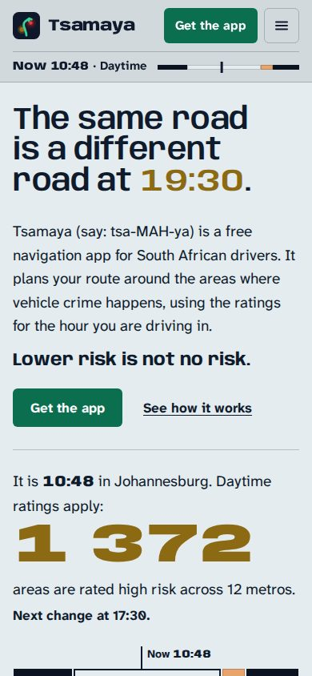
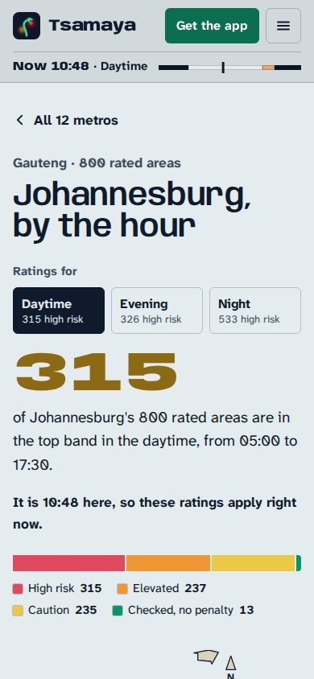
3. Road manual
Open the prototypeSouth African drivers already read one design system fluently at 120 km/h. This design builds the site from it, and turns the app's own A to E route grade into a plate in the same system.
- Signature device
- Green sign panels with a white inset border, route markers for metros and roads, white time plates for the three rating bands, and a yellow roadworks sign for "help fix the map".
- Hero
- An overhead direction sign offering two lanes: Fastest, 16 min, and Lower-risk, 19 min, 2 areas avoided. The swerve arrow echoes the app icon.
- Motion
- The sign settles into place and the swerve arrow draws. A message-sign strip cycles three true messages, with a pause button.
- Type
- Barlow Condensed and Barlow Semi Condensed, the closest free faces to the DIN lettering on SA signs. Production would self-host D-DIN, which is free under the Open Font License.
- Colour
- Concrete grey, sign green, marker yellow, asphalt. Emerald only for the logo and your route.
- Research it draws on
- The SADC Road Traffic Signs Manual, the NYC subway Standards Manual, GOV.UK's road-sign typeface.
- Watch out for
- It must never look like an official sign (no coats of arms, no SANRAL marks). It moves the brand's base colour from navy to sign green, which is a bigger change than the other two.
- Effort to build
- Medium. CSS and SVG, a free font, and small components that repeat.
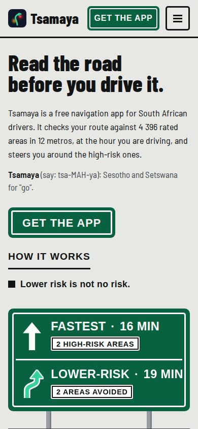
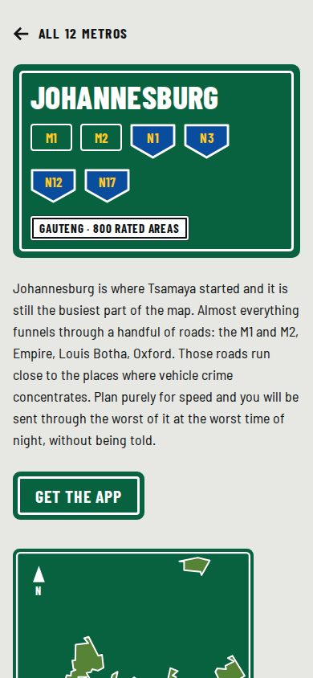
Round 1 side by side
| Criterion | 1. Street guide | 2. City clock | 3. Road manual |
|---|---|---|---|
| Stands apart from the template look | Quietest of the three; the atlas devices carry it. | Time as the design system is unlike any app site. | Unmistakably South African and unmistakably road. |
| Clear to a first-time visitor | Familiar reading order, one idea per section. | The live clock needs a second to understand. | Very legible, but sign styling adds visual noise. |
| Calm and trustworthy for a safety product | Reads like a reference book. Method and limits are visible. | Calm, though the night sections are dramatic. | Sign language sits close to warning imagery, and must never look official. |
| Fit with the current brand | Keeps emerald; a night edition brings back the navy. | Keeps navy and emerald at night. | Moves the base colour from navy to sign green. |
| Tells the time-of-day story | In the map key and a small table. | It is the whole page. | Three time plates and the message sign. |
| Ease of building into the real site | CSS and SVG. The build already draws maps. | Browser time logic and three palettes to test. | CSS and SVG, a free font, repeating parts. |
| Measured size of the home page file | 131 KB, 1 KB of script | 94 KB, 7 KB of script | 111 KB, 3 KB of script |
| Measured first load, fonts and screenshots included | about 360 KB | about 270 KB | about 330 KB |
Scores are a judgement out of five, based on the research above and the built prototypes. Five dots is best on every row, so "Effort to build" scores the easiest build highest.
Round 1 recommendation and next steps
Build the Street guide as the base. A safety product earns trust by being calm and showing its method, and the Street guide does both: it reads like a reference book, the map key and the index put the method on the page, and it works in light and dark. It also fits the way the site is already built, since the coverage map is drawn as SVG at build time today.
Borrow two pieces from the other concepts.
- From City clock: the live line under the hero ("It is 10:48 in Johannesburg. Daytime ratings apply: 1 372 areas are rated high risk. Next change at 17:30."). It is a few lines of script and it proves the time-of-day claim the moment someone lands.
- From Road manual: the A to E grade plate. The grade is the product's own output, and a stacked A to E plate explains it faster than a paragraph.
Keep Road manual in reserve if you want the site to be louder than the app. It is the most local of the three, but it changes the brand colour and it needs care never to look like an official sign.
Before any of it goes live
- Show all three prototypes to five or six drivers in Johannesburg and Cape Town, on their own phones, and ask which one they would trust with their route home. Research on visual taste shows it varies by country and group, so a quick local test beats any award-site trend.
- Check the name line with a first-language speaker. "Tsamaya sentle" is the Setswana form of go well; the Sesotho form is usually given as "tsamaya hantle". The current site calls the name both Sesotho and Setswana.
- Recapture the route card screenshot. The June capture shows an old app banner that still has a dash in it, and all three prototypes use that screenshot.
- When building, move the chosen design into the existing system (layout.mjs, styles.css and the page files), self-host the fonts again, and keep npm run check green. The live site only changes when that work is merged to main.
Sources
- Lindgaard et al. (2006), first impressions in 50 ms. tandfonline.com/doi/abs/10.1080/01449290500330448
- Tuch et al. (2012), visual complexity and prototypicality. research.google.com/pubs/archive/38315.pdf
- Nielsen Norman Group: scrolling and attention; how little users read; photos as web content; animation duration; scroll animations; trustworthy design. nngroup.com
- Krebs, design fingerprints on 1 590 Show HN pages. adriankrebs.ch/blog/design-slop
- Wathan (2025) on the indigo default. x.com/adamwathan/status/1953510802159219096
- Tannenbaum et al. (2015), fear appeals meta-analysis.
- SketchFactor coverage, NBC News (2014).
- WCAG 2.2: contrast 1.4.3, colour 1.4.1, pause 2.2.2, target size 2.5.8. w3.org/TR/WCAG22
- Road signs in South Africa, and the Road Traffic Signs Manual vol. 4 ch. 4. transport.gov.za
- Pentagram, Waze identity (2020); Stamen map styles; Transit 6.0 typeface; Standards Manual; GOV.UK Transport typeface.
- DataReportal Digital 2026 South Africa; StatCounter via MyBroadband; ICASA via TechCentral; Web Almanac 2025 page weight.
- web.dev: Core Web Vitals, animations guide, font best practices, fetch priority.
- Awwwards Annuals: Igloo Inc (Site of the Year 2024); Lando Norris by OFF+BRAND (Site of the Year 2025); Lusion, Oryzo AI case study.
- Linear, Stripe (MiniGL gradient, globe), Vercel Geist grid, Apple product pages, Zoox by Dogstudio.
- Waymo Driver and Safety Impact pages; Tesla FSD visualisation reference; deck.gl HexagonLayer and TripsLayer; earth.nullschool and mapbox/webgl-wind.
- Daily Maverick and News24 on Google and Waze routing in Nyanga (2023); CHI 2023 study on Citizen.
- GSAP 3.13 release notes (all plugins free); Lenis 1.3.26 README; three.js r160, the last UMD build; MDN browser compatibility data for scroll-driven animations.